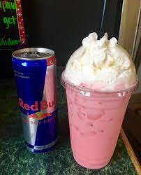

Red Bull Italian Soda

Description
a refreshing blast of Summertime heart disease found at coffee shacks throughout the PNW!
Ingredients
- 1 can of classic Red Bull
- ICE
- 1/2 cup of half & half
- flavored syrup of your choice
- cannister of whipped cream
Steps
- Fill your cup with ice.
- Add desired amount of flavored syrup.
- Pour Red Bull into cup, but leave an inch of pure space.
- Top with half & half.
- Add whipped cream and a "recyclable" straw.